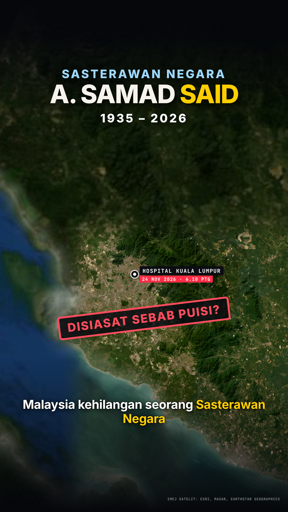
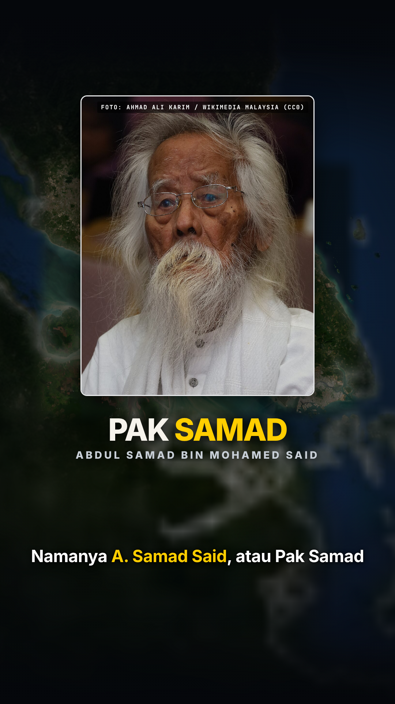
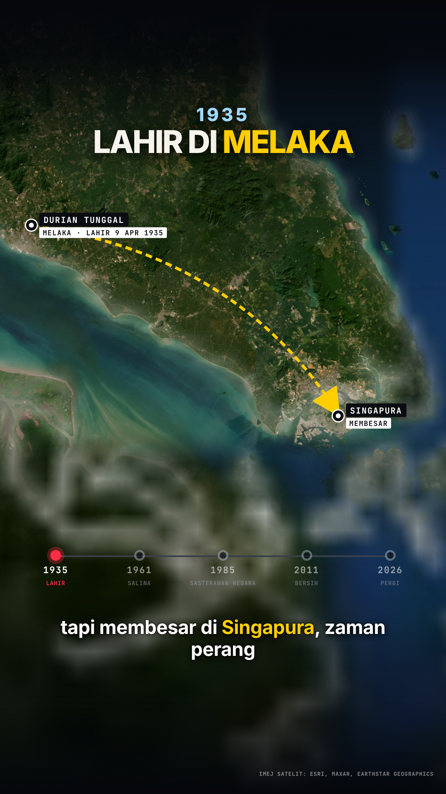
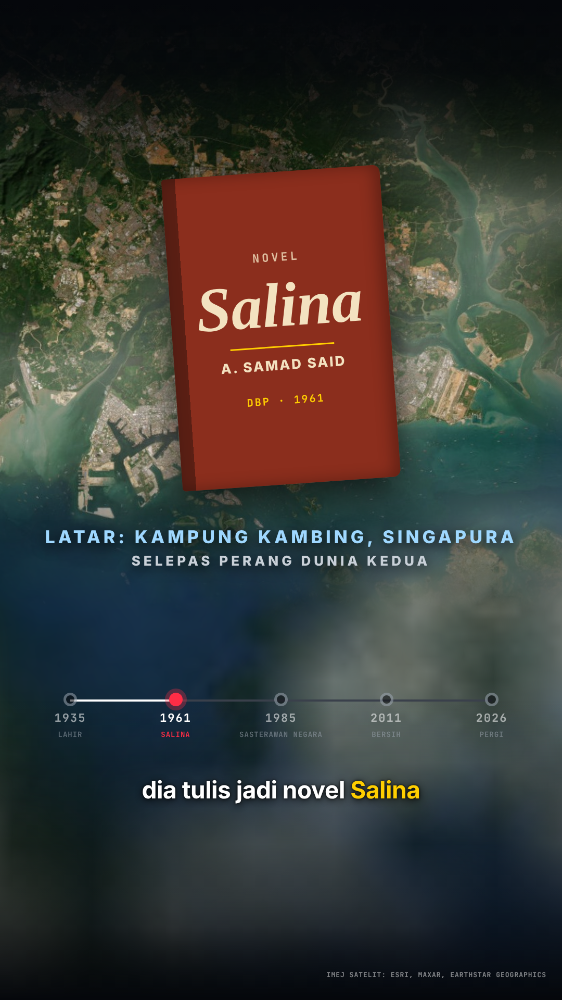
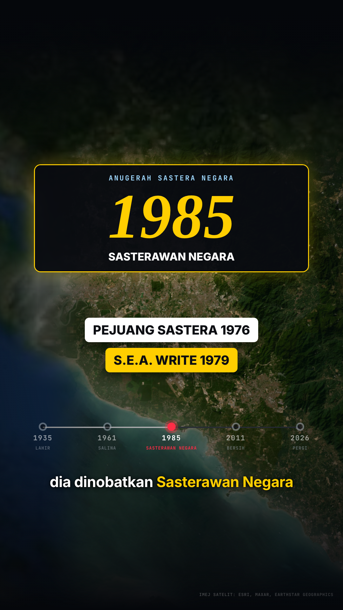
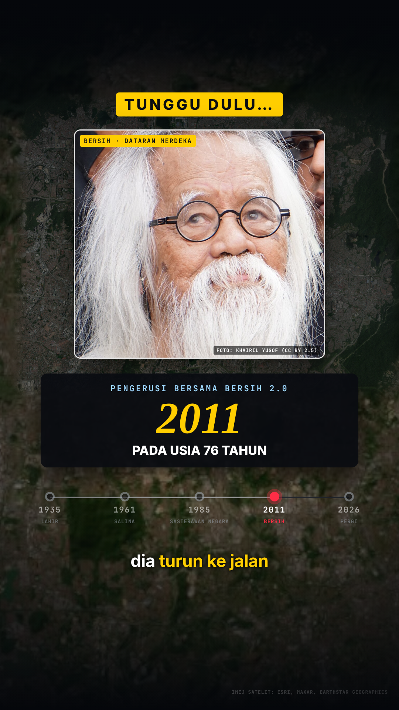
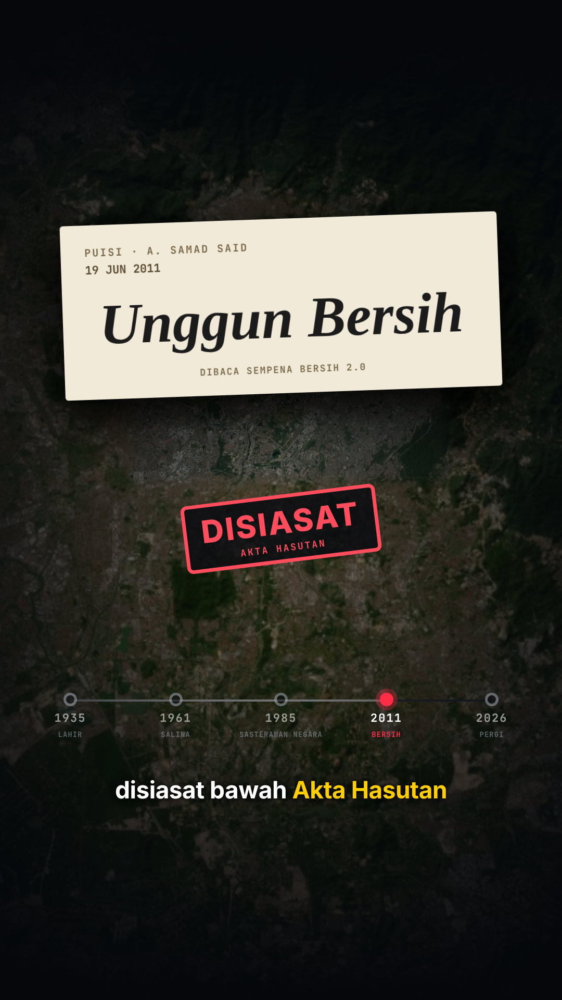
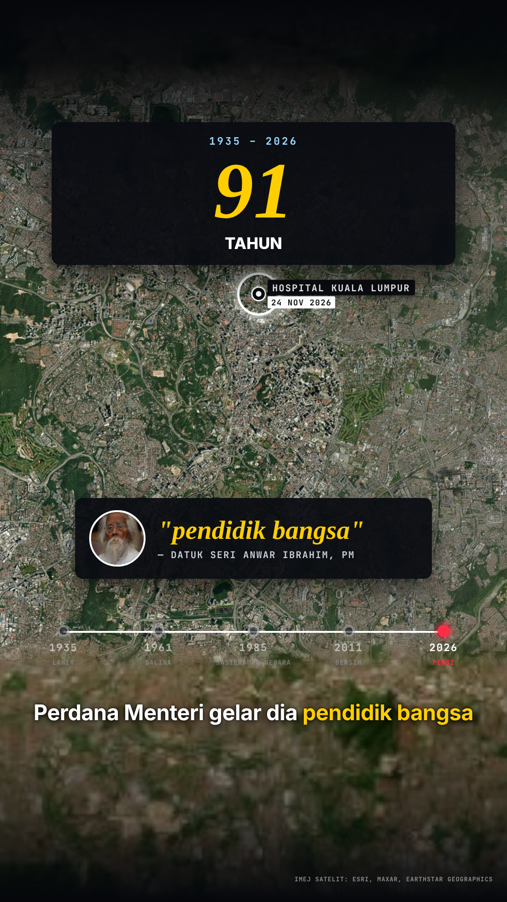
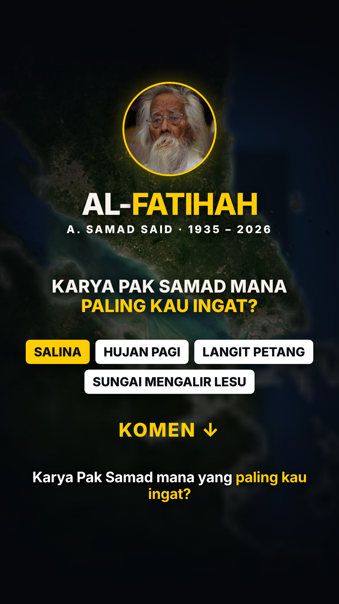

MAP ANIMATION · TRIBUTE · 1080×1920 · ≈55 s · open loop "disiasat sebab puisi" + re-hook Bersih 2011 · foto: Wikimedia Commons · fakta: Bernama, Wikipedia

01 · 0:00
Hook + open loop
"Dua puluh empat November, jam enam sepuluh petang, Malaysia kehilangan seorang Sasterawan Negara. Lelaki ni pernah disiasat polis, hanya kerana sebuah puisi."
Semenanjung dari atas, pin HKL · 24 NOV 2026 · 6.10 PTG. Tajuk A. SAMAD SAID 1935–2026 dan cop merah DISIASAT SEBAB PUISI?

02 · 0:08
Pak Samad
"Namanya A. Samad Said, atau Pak Samad."
Foto sebenar (Wikimedia Malaysia, CC0) dan nama penuh.

03 · 0:11
1935 · Melaka → Singapura
"Lahir tahun 1935 di Durian Tunggal, Melaka, tapi membesar di Singapura, zaman perang."
Imej satelit tajam. Anak panah emas dari Durian Tunggal ke Singapura, garis masa 1935.

04 · 0:18
Salina
"Kisah hidup susah orang Melayu di Kampung Kambing, dia tulis jadi novel Salina."
Zoom ke Singapura, kulit buku Salina · DBP 1961, latar Kampung Kambing.

05 · 0:24
1985
"Tahun 1985, dia dinobatkan Sasterawan Negara."
Terbang ke KL, kad emas 1985 SASTERAWAN NEGARA, cip Pejuang Sastera 1976 dan SEA Write 1979.

06 · 0:29
Re-hook: Bersih
"Tapi tunggu dulu! Pada usia 76, dia turun ke jalan, jadi pengerusi bersama Bersih."
Flash, muzik berhenti. Zoom ke Dataran Merdeka, foto Pak Samad di perhimpunan, dan kad 2011 · usia 76.

07 · 0:37
Unggun Bersih
"Puisinya, Unggun Bersih, disiasat bawah Akta Hasutan."
Kertas puisi Unggun Bersih · 19 Jun 2011 dan cop merah DISIASAT · AKTA HASUTAN. Inilah jawapan kepada hook.

08 · 0:42
91 tahun
"Dia menghembuskan nafas terakhir di HKL, pada usia 91 tahun. Perdana Menteri sendiri gelar dia, pendidik bangsa."
Zoom dekat ke HKL, kad 91 TAHUN dan petikan "pendidik bangsa" (PM Anwar, Bernama).

09 · 0:50
Al-Fatihah + CTA
"Al-Fatihah. Karya Pak Samad mana yang paling kau ingat? Kongsi kat bawah."
Peta gelap, potret bulat, AL-FATIHAH, cip karya (Salina, Hujan Pagi…) dan KOMEN ↓.